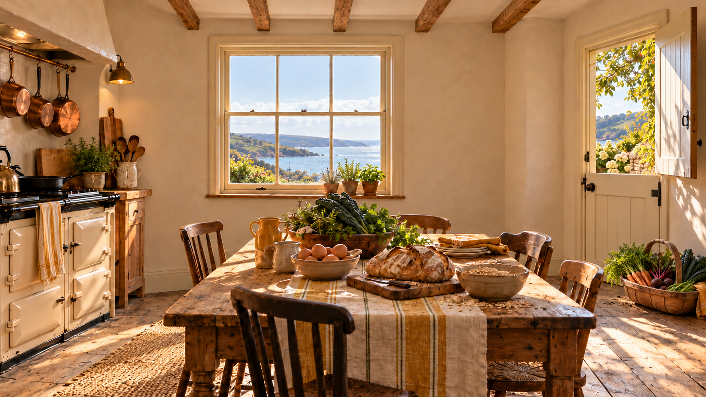

WhiskedAway · The Inn
The Flourish Kitchen
Morning sun on scrubbed pine, marigold linen and food straight from the garden. Twenty-eight image assets, weather and night sets, and the Blender shopping list.

Every exterior plate shares a 2172 × 724 canvas. Small registration corrections use stationary beds, masonry, path and architecture; water, mist, rain and windblown leaves change intentionally. These are perspective backdrops and concept photographs; Blender supplies the exact room geometry, real glazing and final 360° panoramas. Number 13 is intentionally unused.
Fabric repeats
Both square textures have matching opposite edges. These previews repeat the actual delivered PNGs.